Source
SourceSegmentation of objects¶

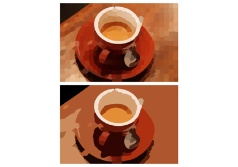
RAG Thresholding

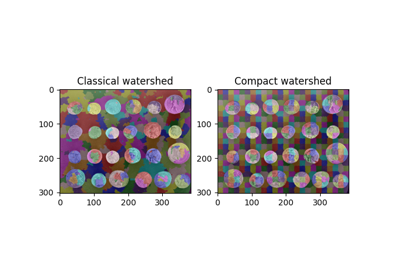
Find Regular Segments Using Compact Watershed
Find Regular Segments Using Compact Watershed
Thresholding

Chan-Vese Segmentation
Finding local maxima
Niblack and Sauvola Thresholding
Niblack and Sauvola Thresholding
Multi-Otsu Thresholding
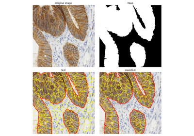
Apply maskSLIC vs SLIC

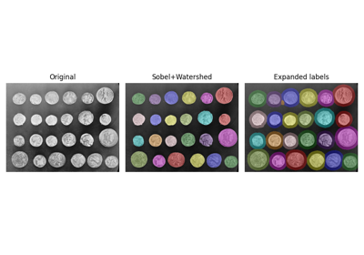
Expand segmentation labels without overlap
Expand segmentation labels without overlap
Watershed segmentation
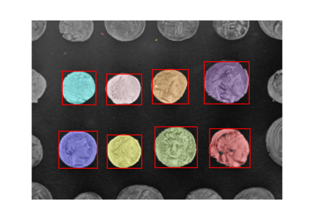
Label image regions

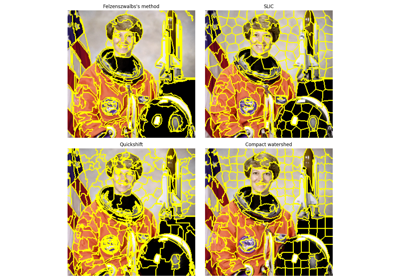
Comparison of segmentation and superpixel algorithms
Comparison of segmentation and superpixel algorithms
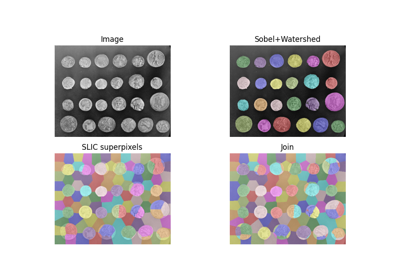
Find the intersection of two segmentations
Find the intersection of two segmentations
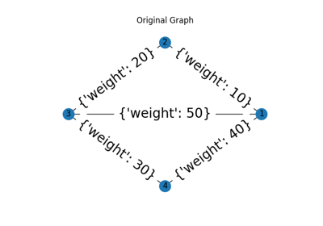
Region Adjacency Graphs
Measure perimeters with different estimators
Measure perimeters with different estimators
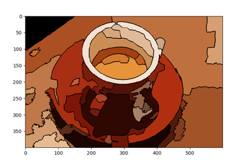
RAG Merging
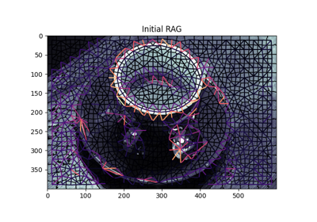
Hierarchical Merging of Region Boundary RAGs
Hierarchical Merging of Region Boundary RAGs
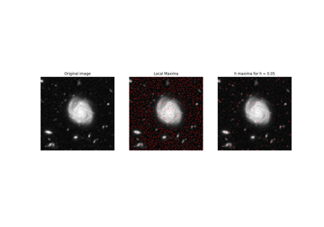
Extrema
Explore and visualize region properties with pandas
Explore and visualize region properties with pandas
Hausdorff Distance
Measure region properties
Trainable segmentation using local features and random forests
Trainable segmentation using local features and random forests
Morphological Snakes
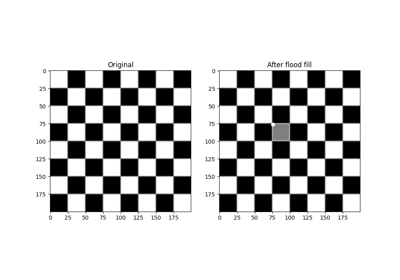
Flood Fill
Euler number
Evaluating segmentation metrics
Evaluating segmentation metrics
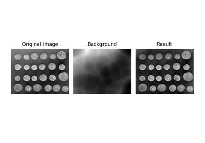
Use rolling-ball algorithm for estimating background intensity
Use rolling-ball algorithm for estimating background intensity